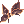
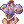
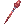
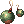

Mayo's Warlock Guide
| This guide has not been updated in a while. | ||
|---|---|---|
| Information on this page may be obsolete and outdated. Please refer to the author for information on future updates. |
||
| Warlock | |||||||||||||||||||
|---|---|---|---|---|---|---|---|---|---|---|---|---|---|---|---|---|---|---|---|
| Job Base: | Wizard / High Wizard | ||||||||||||||||||
| Written By: | Mayo | ||||||||||||||||||
| |||||||||||||||||||
Overview
Hello everyone, this is Mayo and welcome to my Warlock guide. In this guide, I would like to walk you through the basic mechanics of the class, share some builds, gameplay tips and suggestions on equipments.
About me, I haven’t really been a wizard player before renewal. With the introduction of 3rd classes, the role and play style of Wizards have shifted, and my love for the class have begun. I would like to say that I do not think that I’m the most expert Warlock around, but I can enlighten new, inexperienced players about the class.
Warlocks are a very versatile class, used for many roles in parties such as tanks, damage dealers, or crowd control supports. With almost screen wide AoEs, excellent utility skills they are a great addition to any party. But with great strength comes many drawbacks. Warlocks have the lowest HP modifier among 3rd classes (not counting expanded classes), have extremely low weight capacity, and probably one of the most tedious classes to gear.
This guide is tailored specifically for NovaRO, I can’t guarantee this will be of any use for players from other servers.
Most of the data is based on personal experience and research, therefore it can be incorrect or others might disagree with them. If you have any questions or suggestions, feel free to find me on NovaRO Discord or the forums under the name Mayo, you can either send me a private messages or just @ at me, I'll come running.
Cast time reduction
Cast time, delays and cooldowns are extremely important when you’re playing a Warlock. Renewal has changed the cast time formula completely, and introduced cooldowns on top of after-cast delays.
Cast time consist of a fixed, and a variable part. As a rule of thumb, fixed cast time is the 20% of the total cast time, although there are skills with completely fixed cast time (such as Energy Coat), and skills with no fixed cast time (such as
Soul Expansion).
Variable cast time is reduced by two things: your stats and your equipment. Both have different mechanics and effect on your total cast time.
Decreasing variable cast time with stat points
To reach zero Variable Cast Time with stats only, the following formula has to be used:
DEX × 2 + INT = 530
Yes, at first glance, it does sound like an insane number. But let’s take a look at the math here first. Some examples of reaching 530 points:
- INT 170 and DEX 180
- INT 190 and DEX 170
- INT 530
- DEX 265
With 130 being the max stat in Renewal, that doesn’t sound so bad does it? Especially after you think about how easy it is to raise your stat points temporarily. The Archbishop skill Clementia adds +16 DEX and INT, foods are capable of adding +30 DEX and INT.
- +10 INT Dragon Breath Cocktail
- +10 DEX Hwergelmir’s Tonic
Obtainable by cooking, Cash Shop, Slot machine, various boxes, 30 minute duration
- +20 INT
 Warg Blood Cocktail
Warg Blood Cocktail - +20 DEX
Siroma Icetea
Obtainable by the Genetic skill Mixed Cooking, 5 minute duration
At 60 job, Warlocks get 13 INT, and 8 DEX from job bonuses. If we do the math here, that would total a massive 167 points towards your cast time. With 120 DEX and 120 INT, you would total 527 points. And we haven’t taken stat points gained from gears into calculation just yet.
Decreasing variable cast time with equipment
Some equipment, mostly cards and enchants are capable of reducing your variable cast time by a percentage. This is an extremely expensive build, sacrificing all the damage you can to reduce cast time. Reaching 100% reduction would leave you with 0 variable cast time, even with 1 DEX and 1 INT points.
IMPORTANT: Percentage cast time reduction and reduction from stat points do not additively stack together.
Example: you are casting a spell with 10 seconds of variable cast time, and no fixed cast time.
Let’s say so you managed to reach 400 points, which means you have reduced 75% of your cast time from stats only. You are left with 2.5 seconds cast time.
You put on some gear, that lets say reduces 25% of your cast time. 75 + 25 = 100, right? Well, unfortunately, not in this case. The 25% only applies after the reduction by stats NOT the original cast time, which would mean, 25% of the 2.5 seconds. This would leave you with roughly 1.8 seconds of cast time.
For this reason, I would heavily advise against using cast time reduction gear altogether, unless you are planning on reaching 90-100% reduction by equipment only.
Note: Poem Of Bragi's cast time reduction stacks with this kind of reduction, while Suffragium, Isilla Card and Intense Telekinesis does not.
Notable equipment to reduce cast time:
 +9 Crown Of Deceit [1] (from Cash Shop) with
+9 Crown Of Deceit [1] (from Cash Shop) with  Kathryne Keyron Card: 29% reduction
Kathryne Keyron Card: 29% reduction- Spell enchants (from Malangdo Enchants, Old Glast Heim instances): 10% reduction each
 +9 Vellum Arc Wand: 50% reduction (in WoE/PvP)
+9 Vellum Arc Wand: 50% reduction (in WoE/PvP) +9 Ferlock's Cloack [1] (from Airship Assault): 30% reduction
+9 Ferlock's Cloack [1] (from Airship Assault): 30% reduction
Fixed cast time
Fixed cast time can only be reduced by buffs and equipment.
Percentage based reductions do not stack here, only the strongest one is applied.
For example: Having Radius at level 3 reduces your fixed cast time by 20%, but your Archbishop friend casts Sacrament on you, which reduces your fixed cast time by 50%. Since only the strongest one applies, your fixed cast time will be reduced only by 50%
However, fixed (flat) reduction does stack with percentage reduction, and also with itself. This makes it possible to reduce fixed cast time to zero.
Equipment that reduces your fixed cast time by an amount:
 Temporal Dex Boots [1] (Obtainable from Old Glast Heim instance): 0.5s reduction
Temporal Dex Boots [1] (Obtainable from Old Glast Heim instance): 0.5s reduction- +9 Vellum Arc Wand: 0.2s reduction (in WoE/PvP)
 Zaha Doll Hat [1]: 0.08s reduction per refine level while transformed
Zaha Doll Hat [1]: 0.08s reduction per refine level while transformed
Reading Spell Book
Reading Spell Book skill now allows Warlocks to instant cast previously stored spells. To store a spell, you have to have the specific spell book in your inventory, cast the skill, and choose which one you’d like to store. Each spell book have their own “mind slot” cost – the more powerful the spell the more slots it’ll take. Mind slots can be increased by base level (1 for every 10 base level), INT (1 for every 10 INT) and by the skill Freezing Spell. The amount of spells stored can be calculated by the following formula:
Slots = (4*Freezing Spell Lv) + floor(BLv/10) + floor(INT/10)
Once you have your spells stored, cast Release, and a random spell from your stored ones will be released. Even if the spell is ground target (such as
Earth Strain or
Comet), you will need a target to use Release, but the spell will still act as ground target, and will be blocked by skills such as Maelstorm and Land Protector.
Releasing a spell will activate the cooldown and global skill delay of the spell, leaving you unable to manually cast the spell again until the cooldown is done, but allowing you to release it again. Because of this, it is recommended to cast skills with lower cast time and longer cooldown (such as Crimson Rock) first, and then Release the stored spells. This allows you to cast these spells up to 4 times – once casted, and released 3 times – without having to worry about cooldown. This also makes it possible to “Comet spam” – storing up 2 Comets, and releasing them without cooldown then storing them up again.
You can purchase spell books at the Geffen Mage guild (/navi geffen_in 174/112) from Lea after talking to Magic Book Master Velof.
Beginner’s Magic Books
- Fire Bolt (7 slots)
- Cold Bolt (7 slots)
- Lightning Bolt (7 slots)
Intermediate Spell Books
- Earth Spike (8 slots)
- Thunderstorm (9 slots)
- Jupitel Thunder (9 slots)
- Water Ball (9 slots)
- Heaven’s Drive (9 slots)
- Storm Gust (10 slots)
- Lord of Vermillion (10 slots)
- Meteor Storm (10 slots)
Superior Magic Books
- Drain Life (8 slots)
- Crimson Rock (12 slots)
- Chain Lightning (12 slots)
- Earth Strain (12 slots)
(Tip: Choosing Superior Magic Books and then the “Let me think” option will allow you to pay 200,000 zeny for the books instead of bringing items to her)
Ultimate Magic Books
- Comet (22 slots)
- Tetra Vortex (22 slots)
To obtain Ultimate Magic Books, you will have to complete several quests:
Notable Skills
Magician Spells
| Skill | Notes |
|---|---|
| It's hard to stress how important and powerful this skill is while fighting monsters. The technique, called "vertical fire walling (vfw)" exists since the beginning of time, and one of the hardest mechanic a beginner Magician has to learn. At early Magician levels, its damage alone will destroy undead monsters, making you fly through the early Magician stage in no time. At later levels, it is mainly used for protection, and helping to proc such effects as Reckless Magic, Isilla card. (Tip: Some help to understand vertical fire walling can be found here, and to master it click here.) | |
| Another great spell for early leveling, although it will become quite useless at later levels. Amazing for mobbing at Orc Dungeon. I would recommend getting this as a Magician, then dropping it at later levels. Recommended level: 10 (only as a Magician) | |
| A Magician needs all the protection they can get. Blocks 12 hits, very fast casting time. You should be using this at all times on yourself/allies, it will help so your cast doesn't get interrupted. At later levels, it is possible to tank MvPs with spamming Safety Wall constantly on one cell. Consumes 1 Recommended level: 10 | |
| Always great for revealing hidden enemies. Recommended level: 1 | |
| A massive damage reduction in the cost of your SP. I wouldn't recommend using it while leveling, because it will eat your SP up really fast, but a must in PvP. Quest Skill |
Wizard and High Wizard Spells
| Skill | Notes |
|---|---|
| This skill has been one of the most important spells as a Wizard for years. Offers great damage and crowd control, leaves enemies frozen by a chance. It is recommended to use lv10 for damage, lv1 for crowd control. Recommended level: 10 | |
| You might think I've gone insane listing this spell if you're unfamiliar with the renewal changes. Frost Nova now offers great utility and crowd control for solo plays with insanely fast cast times and high success chances. Use it while mobbing in Juperos and other mobby maps, then hit enemies with Crimson Rock (Fire element deals 90% to Water1 element). Recommended level: 7-10 | |
| Great spell for unhiding Thief classes in PvP/GvG. Fast cast time, low cost. Recommended level: 1 | |
| Amazing for mobbing, and PvP. Reduces the movement speed, AGI and DEX of the targets and also Movement speed buffs such as Increase AGI, Cart Boost. Only 3 Quagmires can be active at a time. Lower skill levels have lower durations, allowing you to place your Quagmires at different locations more frequently. Affects allies in PvP/GvG. Recommended level: 3-5 | |
| This skill is extremely important when farming with Soul Expansion and Crimson Rock, will refund a lot of SP consumed, leaving you with almost infinite SP. Recommended level: 10 | |
| +50% MAtk for your next spell. This bonus does not show up in your Status Window, but you will see the difference in the damage. Do note that this skill does not work with Reading Spell Book. Recommended level: 10 |
Warlock Spells
Psychokinetic branch
| Skill | Notes |
|---|---|
| Decreases target's movement speed, AGI and DEX of the target by a chance. Can be cast on Frozen, Imprisoned target. Stacks with Quagmire. Recommended level: 5 for PvP, 0 for PvM | |
| Increases Mind Slots for Reading Spell Book. See more Recommended level: 0 or 4 | |
| Your main damage spell for single-targets (or very little, 5x5 AoE), and an amazing spell for farming. This skill has fast cast, no cooldown, just a 0.5 second delay which can easily be reduced by Bard's skill Poem of Bragi - makes it very much spammable with only ASPD delay. Damage is easily amplified by equipment. Recommended level: 5 | |
| Locks a target in a transparent box by chance that prevents damage except from Ghost property. Imprisoned targets can't use potions, skills and cannot move, and most importantly, they take amplified damage from Soul Expansion. This skill can be used on the caster itself, which provides amazing utility for tanking MvPs, or burst skills in PvP. When casted on yourself, it lasts 5 seconds and has a 4 second cooldown, making it possible to tank MvPs (that do not have ghost attack) indefinitely. | |
| Raises the damage of Ghost Spells by 300%, lowers variable cast time by -50% and SP cost of skills by -50%. Has one minute duration and 5 minute cool down, use it wisely. Recommended level: 5 |
Mental branch
| Skill | Notes |
|---|---|
| Releases summoned elemental balls, and stored spells from Reading Spell Book. See more Recommended level: 1 or 2(for Recognized Spell) | |
| Used to store up spells for instant cast. See more Recommended level: 1 | |
| Increases the cast range of Warlock spells, reduces fixed cast time. Recommended level: 1 or 3 | |
| Amazing for solo PvM in my opinion, lets you drain back about 3-4000 HP each cast, low single-target damage. This skill, combined with Soul Drain will let you farm cards indefinitely. Deals Neutral damage. Recommended level: 1 or 5 (if you're planning of using it) | |
| Prevents casting of spells in a 27x27 AoE (at max level), including you and allies. Don't use it in PvM, unless you're planning on getting your party wiped. Can turn tables in WoE if used carefully. The Priest skill Status Recovery removes the effect of Stasis | |
| Makes the caster deal the maximum damage with all magic skills, but increases SP cost by 25%. Recommended level: 1 Higher levels only increase the duration and cooldown of the spell, never get higher than 1 |
Fire branch
| Skill | Notes |
|---|---|
| Used to summon Fire elemental balls for Tetra Vortex. Recommended level: 1 | |
| Deals high amount of fire damage, knocks target back and leaves them stunned. Needs a target to cast, but it is an 7x7 AoE spell, not blocked by Land Protector. One of your main damage sources for leveling, damage easily (and rather cheaply) amplified by equipment, such as Alchemy Glove, or Crimson Set. Recommended level: 5 | |
| Deals low Shadow and Fire property damage, and leaves the target Burning. Only use would basically be using it on Plant type monsters, since Burning bypasses Plant defense (meaning monsters that would take one damage such as Red Plant will take 2000). Recommended level: 3 for |
Water branch
| Skill | Notes |
|---|---|
| Used to summon Water elemental balls for Tetra Vortex. Recommended level: 1 | |
| Deals decent amount of water damage, leaves enemies Freezing. IMPORTANT: Freezing is different from Frozen - reduces movement speed by 50%, attack speed by 15% and increases variable cast time by 10%. Freezing targets take amplified damage from Recommended level: 3 or 5 | |
| Deals water property damage around you, leaves enemies Frozen. If the target is Freezing, it will take amplified damage. Use it after Recommended level: 5 |
Wind branch
| Skill | Notes |
|---|---|
| Used to summon Wind elemental balls for Tetra Vortex. Recommended level: 1 | |
| Single target wind spell, deals a good chunk of damage, and bounces off of enemies. It is possible to bounce on hidden targets. No cooldown, only 3 seconds cast delay, which makes this skill the best single target MvP spell from Poem Of Bragi. Recommended level: 5 |
Earth branch
| Skill | Notes |
|---|---|
| Used to summon Earth elemental balls for Tetra Vortex. Recommended level: 1 | |
| At max level, Stone Curses (Petrifies) targets in a 7x7 AoE by 70% chance of success. Highly recommended maxing it for PvP, since most people don't have stone curse resist. Consumes 2 Red Gemstones. Recommended level: 2 or 5 | |
| Deals Earth property damage, but most importantly, strips the equipment of the enemy by high chance. Useful on even targets with Full Chemical Protection since it strips their Accessories, which cannot be protected. Your best utility spell for PvP, I'd recommend releasing it only since it has a long cooldown. Recommended level: 5 |
Ultimate branch
| Skill | Notes |
|---|---|
| Deals high Neutral property damage in a huge, 19x19 AoE and leaves enemies Burning. Enemies closer to the impact will take more damage. Consumes 2 Red Gemstones. This skill has amplified damage and lower SP cost, also removes the Red Gemstone cost if used while having other Warlocks in your party. | |
| Your ultimate single-target burst spell. Requires elemental balls summoned. The property of the damage depends on the summoned balls. Excellent for low level MvPs, and nuking single targets in PvP/WoE. It is recommended to use Earth/Wind property against players. Recommended level: 5 (optional) |
Stats
- Strength (STR)
For Warlocks, mainly used for increasing Weight Limit, which helps with Masquerade resistance as well. If you can spare some points, it's nice to have 20-30 STR.
- Agility (AGI)
Both an offensive and a defensive stat. Raises Attack speed, and flee rate. Attack speed reduces ASPD delay, which makes a huge difference in your skill spam, flee gives you a little more protection against monsters. For most builds, 100 AGI is recommended.
100 AGI gives immunity against Bleeding and Sleep statuses, also reduces the duration of Masquerades. It is advised to have at least 175 ASPD.
(Little note to the video - Genetic's Cart Cannon and Warlock's
Soul Expansion share the same mechanics in terms of cast time and delay.)
- Vitality (VIT)
Every point of VIT raises your Max HP by +1% and the effectiveness of potions. Since we have the lowest HP modifier among 3rd classes, and tend to die pretty easily in both party and PvP situations, it is advised to run at least 100 total VIT.
100 VIT gives immunity to Stun and Curse, and protects against Crystallization, Freezing and Mandragora Howling.
- Intelligence (INT)
A Mage's bread and butter, directly raises your mATK by +1.5 per point, decreases your cast time, raises your SP pool and regeneration. Also gives immunity to Silence, helps with Sleep, Deep Sleep and Oblivion Curse duration.
Since it is one of our main stats to get damage out of, it is recommended to get 120 base INT, however I would not recommend getting more than 120 base INT - it becomes very expensive in terms of status points to raise it - you can get more mATK and utility out of some LUK and DEX.
- Dexterity (DEX)
Primary stat to reduce cast time, but it also raises your ASPD, and your mATK by 1/5 therefore it is ideal to have your DEX at multiples of 5. I would recommend getting around 105-120 base DEX, depending whether you want instant cast (or can get it elsewhere) or not.
The difference between you and your target's DEX affects the chance of divest from Earth Strain, and it also helps with Freezing duration.
- Luck (LUK)
This stat has gotten a major update with the introduction of renewal. Now every 3 points of LUK gives an additional +1 ATK/mATK, which makes it a very viable option to gain some mATK at later levels. Raising your INT from 120 to 130 would require you to use 340 stat points and would net you +15 mATK, while raising LUK from 1 to 30 would cost you only 86 stat points, and raise your mATK by +10. Glass Cannon and damage oriented builds usually have 30 or 60 LUK, depending on the player's taste.
Equipment
Most desirable options are seen bolded
Headgears
| Item | Type | Way to obtain | Notes |
|---|---|---|---|
 Magic Stone Hat [1] Magic Stone Hat [1]
|
Upper | Job change | Your first Warlock exclusive piece. Gives a tiny bit of flat MATK at 120 DEX, has a slot. It will serve you just right before you can spare some money for an expensive piece. |
| Ordinary Black Magician Hat [1] | Upper | Cash Shop | MDEF piercing, and damage increase in elemental magic. Opt for an overupgraded one. |
 Skull Cap [1] Skull Cap [1]
|
Upper | Cash Shop | Gives MATK%, but most importantly, amazing combos with named one-handed rods. |
 Feather Beret Feather Beret
|
Upper | Quest | PvP Choice |
 Vibrant Rose [1] Vibrant Rose [1]
|
Upper | Horror Toy Factory | Amazing flat +MATK boost, looks pretty. Preferred headgear for Green Lichtern card. |
|  Celine's Ribbon [1] | Upper | Horror Toy Factory | Highest flat MATK boost in the game, +3 DEX. |
 Wickebine's Black Cat Ears [0] Wickebine's Black Cat Ears [0]
|
Upper | Quest | Adds a 5% chance to completely ignore the target's MDEF for 5 seconds. Great for spamming. |
| Zaha Doll Hat [1]
|
Upper | Siege Token | Adds a chance to transform you into 'Bacsojin'. While transformed, increases mATK and decreases fixed cast time by 0.08seconds per refine level. This allows you to instant cast skills such as Chain Lightning and Jack Frost, making them spammable from Poem Of Bragi. |
 Blush of Groom Blush of Groom
|
Middle | Cash Shop | PvP Choice. |
 Black Frame Glasses [1] Black Frame Glasses [1]
|
Middle | Cash Shop | Best in slot, +1 INT. |
 Elven Ears Elven Ears
|
Middle | Monster drop | Most importantly cute, but also gives set bonus with Skull Cap. Can be slotted. |
 Cyclops Eyes [1] Cyclops Eyes [1]
|
Middle | Monster drop | Cheap slotted middle piece. |
 Gentleman's Pipe Gentleman's Pipe
|
Bottom | Cash Shop | PvP Choice |
| Rainbow Scarf | Bottom | Cash Shop | Best for raising damage, +1% MATK +1 INT |
| Card | Monster drop | Wind damage boost, useful for Chain Lightning spam and Tetra Vortex builds. | |
| Card | Monster drop | For Soul Expansion builds, raises Ghost damage. (Divine Pride lists the name incorrectly, it's Green ingame, not Yellow) | |
| Card | Monster drop | Fire damage boost, small MATK bonus. | |
| Card | Monster drop | Earth damage boost, small MATK bonus. (Divine Pride is derping, it's earth damage, not ghost) | |
| Card | Monster drop | Cheap +2 INT, and the cast time reduction boost comes in handy at early levels. Best if put in middle headgear. | |
| Card | Monster drop | Defensive choice against Stone curse and Sleep. Best in middle headgear. | |
 Darklord Essence Intelligence3 Darklord Essence Intelligence3
|
Card | Temple of the Demon God | Raises overall damage, +12 MATK +4 INT -4 STR. |
 Weakened Fenrir Card Weakened Fenrir Card
|
Card | Geffen Magic Tournament | MATK +25 |
Armors
| Item | Type | Way to obtain | Notes |
|---|---|---|---|
 Orlean's Gown [1] Orlean's Gown [1]
|
Armor | Monster Drop | Makes your casting uninterruptible, great when starting out. |
 Airship's Armor Airship's Armor
|
Armor | Airship Assault | Cheap allstat +1, gives +1000 HP +100 SP. |
|  Valkyrian Armor [1] | Armor | Monster Drop | Allstats +1, can be enchanted with +3 INT with hidden enchant. |
 Diabolus Robe [1] Diabolus Robe [1]
|
Armor | Monster Drop | Reduces aftercast delay, gives +2% MATK and ATK when paired with Diabolus Ring, can be enchanted with +3 INT with hidden enchant. |
 Hero Mage Coat [1] Hero Mage Coat [1]
|
Armor | Bios Island Morse Cave |
+5% HP/SP, +10 MATK, gives some bonus damage with Fire element. If the refine level is even, every upgrade reduces the Variable Cast Time by 1%. On odd refines, prevent casting interruption and increase Variable Cast Time by 20%. (Similar to a Phen card) |
 Flattery Robe [1] Flattery Robe [1]
|
Armor | Honor Token | +150 MATK at level 175, further enchantable. Best in Slot. |
 WoE Robe [1] WoE Robe [1]
|
Armor | Guild Dungeon Investment System | PvP Choice, must be upgraded to +6 or +9. Reduces incoming ranged damage, gives +1000 HP. |
| Card | Monster drop | +5% MATK, best for damage builds. | |
| Card | Monster drop | Frozen immunity, a must for PvP situations. | |
| Card | Monster drop | Frozen and Stone curse immunity, +1 INT. Don't forget this on yourself when you're in a party, or you wont be resurrectible. | |
| Darklord Essence Intelligence3
|
Card | Temple of the Demon God | Raises overall damage, +12 MATK +4 INT -4 STR. |
Weapons
| Item | Type | Way to obtain | Notes |
|---|---|---|---|
 Soul Staff Soul Staff
|
Two-Handed Rod | Monster Drop | Great for starters, high base MATK, +5 INT. Combo with Spiritual Ring. |
 Thanatos Two-handed Staff [1] Thanatos Two-handed Staff [1]
|
Two-Handed Rod | Ghost Palace | +250 MATK, +6 INT, gives a chance to recover HP and SP while magically attacking. Great for starting out. |
 Kronos [1] Kronos [1]
|
Two-Handed Rod | Monster Drop | +240 MATK, +3 INT. Can be Malangdo enchanted, which makes it a tiny bit better than Thanatos Two-handed Staff, although still not worth to invest in. |
 Staff Of Destruction [1] Staff Of Destruction [1]
|
Two-Handed Rod | Monster Drop | +280 MATK, +3 INT +10 AGI, can be Malangdo enchanted. This should be the first item to splurge for, as it will serve you well all around until you move on to more expensive options. Look out for the autocast Jupitel, it can either save you or kill you. |
| Sunflower Boy [2] | Two-Handed Rod | Sky Fortress | +320 MATK +5 INT, Matk + 1% per 2 upgrade levels of the item. Highest MATK boost in the game as of now. |
| Crimson Staff [2] | Two-Handed Rod | Monster Drop | On high refines, pretty much on par with Staff of Destruction if not better, but if you're only going to go as far as +5, it's not worth it, just stick with a +4 Staff of Destruction. |
 Vicious Mind Two-Handed Staff [2] Vicious Mind Two-Handed Staff [2]
|
Two-Handed Rod | Sky Fortress | A better version of the Crimson above, comes randomly enchanted. It is much harder to refine, due to it being more rare, and a level 4 weapon so it might end up very costly for what it's worth. |
| Vellum Arc Wand
|
Two-Handed Rod | WoE Weapon Supply Box | PvP Choice, must be upgraded to +6/+9 |
 Thorn Staff Of Darkness Thorn Staff Of Darkness
|
One-Handed Rod | Endless Tower | MATK + 160, Int + 3, Dex + 3, each upgrade level adds MDEF bypassing and reduces cast delay of all skills. Can be Malangdo enchanted. Combo with Skull Cap. Nice all-rounder, although the lack of slot makes it sub-par compared to Crimson Rod in many situations. |
|  Crimson Rod [2] | One-Handed Rod | Monster Drop | Basically the best option out there at the moment for instances, because of the decent mATK and due to the fact that it's slotted and One-Handed, and allows you to use the MDEF Pierce card sets (mentioned below) |
 Vicious Mind Rod [2] Vicious Mind Rod [2]
|
One-Handed Rod | Sky Fortress | An upgraded version of the Crimson that comes with random enchants. It offers a bit more mATK than the one above, but also much harder to obtain on high refines, which makes it a very niche option. |
 Fortune Sword Fortune Sword
|
Dagger | Monster drop | Swap to this whenever you're not casting skills in PvM. Perfect Dodge +20, helps a ton with tanking and mobbing. |
 Combat Knife Combat Knife
|
Dagger | Monster drop | Same as Fortune Sword, only for PvP, especially for support builds. Can be Malangdo enchanted. |
| Darklord Essence Intelligence3
|
Card | Temple of the Demon God | Raises overall damage, +12 MATK +4 INT -4 STR. |
| Card | Monster drop | +10% damage against Undead monsters, great against a lot of instance bosses. | |
| Card | Monster drop | +10% damage against Demi-Human monsters which can be useful on Geffen Magic Tournament, or while sniping Cecils in Biolabs with earth Tetra | |
| Card | Monster drop | +10% damage against Insect monsters, Scarabas. | |
| Card | Monster drop | Increase magical damage against Formless and Demon races by 5%. When equipped with a shield compounded to Neo Punk Card: Ignores 50% of Formless and Demon monster's Magic Defense Rate. Very useful card for Instances such as Charleston Crisis, Last Room, Morse's Cave, Horror Toy Factory and many more | |
| Card | Monster drop | Increase magical damage against Brute and Undead monster by 5% When equipped with equip compounded with Nightmare Arclouse card: Reduces damage from Brute and Undead monsters by 5%. Ignore 50% magic defense of Brute and Undead monsters. Very useful card for Instances such as Old Glast Heim, and also against the final boss, Celine Kimi in Horror Toy Factory | |
| Card | Sky Fortress | MATK + 10% |
Shields
| Item | Type | Way to obtain | Notes |
|---|---|---|---|
| Valkyrja's Shield [1] | Shield | Monster drop | Hands down the best multi-purpose shield in game. Adds 20% resistance to Water, Fire, Undead and Shadow properties. |
 Immune Shield [1] Immune Shield [1]
|
Shield | Monster Hunter Proof of Loyalty Battlegrounds | Must be over-upgraded, probably the best choice for fighting monsters. |
| Mad Bunny [1] | Shield | Cash Shop | Has a tiny bit different effect on NovaRO than on divine pride. ATK +5%, MATK +5%. If refined to +7, ATK +5, MATK +5. If refined +9, ATK +15, MATK +15. If refined to +12, skill casting cannot be interrupted. CRIT +10. |
| Card | Monster drop | 30% resistance against Demi-Human monsters (and players). | |
| Card | Monster drop | Reduces damage from Small, Mid, and Large size monsters by 15%. Best for PvM purposes. | |
| Card | Monster drop | Receive 40% less damage from Boss monsters. Receive 40% more damage from normal monsters. Useful for tanking MvPs and other Boss-types | |
| Card | Monster drop | Reduce damage from Brute and Undead monsters by 20%, but most importantly, set bonus with Nightmare Mimic Card (see Weapons section above). | |
| Card | Monster drop | Reduce damage taken from Formless and Demon races by 20%, but most importantly, set bonus with Big Ben Card (see Weapons section above). |
Garments
| Item | Type | Way to obtain | Notes |
|---|---|---|---|
 Cloak of Airship [1] Cloak of Airship [1]
|
Garment | Airship Assault | Very cheap, slot, -20% cast time and +10% neutral resistance. An all-round great garment for PvM, unless you want to stack MATK religiously. |
| Ferlock's Cloak [1]
|
Garment | Airship Assault | A better alternative to the Airship Cloak, the only downside is that it needs to be +9. |
 Giant Snake Skin [1] Giant Snake Skin [1]
|
Garment | Faceworm's Nest | Boosts stats depending on enchants therefore it's the most versatile garment for all builds, although a monostat one can get expensive (INT/INT/INT etc). +15% HP and +5% SP if worn with Temporal Boots. Best option to compound elemental booster cards on (see below) |
 Heroic Backpack [1] Heroic Backpack [1]
|
Garment | Monster Hunter Proof of Loyalty Battlegrounds | Must be refined to +7/+9, gives the highest MATK among garments, great for glass cannon builds. Best all round, ideally compounded with an Antique Book card. |
 WoE Muffler [1] WoE Muffler [1]
|
Garment | Guild Dungeon Investment System | Gives reduction in WoE/BG |
| Card | Monster drop | MATK +5 every 10 base INT. | |
| Card | Monster drop | 15% neutral property resist, increases damage of earth element magic attacks by 3% per refine. Usually best compounded on a +10 or higher Giant Snake Skin | |
| Card | Monster drop | 15% neutral property resist, increases damage of water element magic attacks by 3% per refine. | |
| Card | Monster drop | 15% neutral property resist, increases damage of fire element magic attacks by 3% per refine. Exactly the same as above, just with Fire. | |
| Card | Monster drop | 20% neutral resistance, great for both PvM/PvP | |
| Card | Monster drop | 10% neutral and ranged resistance, an alternative for Raydric, more for PvP | |
| Card | Monster drop | 30% water resistance, mostly used in WoE/BG against Water Dragon Breath |
Shoes
| Item | Type | Way to obtain | Notes |
|---|---|---|---|
 Variant Shoes Variant Shoes
|
Shoes | Monster drop | +20% HP/SP, cheap and great when starting out. |
 Temporal Int Boots [1] Temporal Int Boots [1]
|
Shoes | Old Glast Heim | MHP + 300, MSP + 30, +60 MATK if the user's base INT is 120. Most suitable for Release and Soul Expansion builds. Opt for a Spell 9, Reckless Magic/Lucky Day enchanted one, preferably upgraded to +7/+9. |
| Temporal Dex Boots [1]
|
Shoes | Old Glast Heim | MHP + 300, MSP + 30, reduces fixed cast time by 0.5 seconds if the user's base DEX is 120. Most suitable for "elementalist", support builds. Opt for a Spell 9, Lucky Day/Reckless Magic enchanted one. |
 WoE Shoes [1] WoE Shoes [1]
|
Shoes | Guild Dungeon Investment System | Gives reduction in WoE/BG |
| Card | Monster drop | +5% magic damage, at refine level +7 gives an extra +3%, and a bonus +2% at +9 (a total of 10% at +9) | |
| Card | Monster drop | +10% HP VIT+1 | |
| Card | Monster drop | +10% HP AGI+1 | |
| Card | Monster drop | +10% HP/SP at refine level +9, Str+2 |
Accessories
| Item | Type | Way to obtain | Notes |
|---|---|---|---|
| Alchemy Glove [1] | Accessory | Monster drop | Cheap easy to get accessory early on, great for Crimson Rock leveling. The autocast FireBall interferes with your Soul Expansion spam, so dont forget to take it down whenever the situation asks for it. |
 INT Glove [1] INT Glove [1]
|
Accessory | Eclage | MATK +1 per 10 points of INT. MATK +1% when INT is 110 or higher |
| Orlean's Glove [1] | Accessory | Monster drop | Dex +2, MATK +3% |
| Bradium Earring [1] | Accessory | Quest | Matk +2%, Int + 1, Dex +1. If you did all the quests for the Ultimate Spellbooks, it's fairly easy to pick up. |
| Magic Intensifier Ring [1] | Accessory | Geffen Magic Tournament | MATK +5%, very tedious to get. |
 Glorious Ring Glorious Ring
|
Accessory | Battlegrounds | For support/PvP builds. HP +300. Resistance to attacks with Water, Wind, Earth, and Fire properties +10%. Aspd +5%. Variable Casting Speed reduces by 3% |
 Black Rosary [1] Black Rosary [1]
|
Accessory | Monster drop | Defensive option. Mdef +15 |
 Hero Ring Hero Ring
|
Accessory | Bios Island Morse's Cave Temple of the Demon God | Can be enchanted with +5 INT +5% MATK, but no slot. |
|  Sarah's Earring | Accessory | Sarah and Fenrir | Can be enchanted (see instance page for details) with up to 9% MATK, or -10% after cast delay reduction. |
| Card | Monster drop | MATK + 20, MSP - 1%. | |
| Card | Monster Drop | Fire/Earth magic damage +20%. Best compounded on an Alchemy Glove for additional fire damage boost. | |
| Card | Monster Drop | Water/Holy magic damage +20%. | |
| Card |  MCA MCA
|
Wind/Ghost magic damage +20%. Amazing for Chain Lightning and Soul Expansion spam, also useful for Tetra Vortex builds. Expensive as hell. | |
| Card | Monster drop | Gives lv. 1 Hiding | |
| Card | Monster drop | Makes your casting uninterruptible, +25% Cast time. | |
| Card | Monster drop | Defensive choice, +5% long range reduction. |
Elemental sets
| +9 Top Headgear | Ordinary Black Magician Hat [1] + |
Ordinary Black Magician Hat [1] + |
Ordinary Black Magician Hat [1] + |
Ordinary Black Magician Hat [1] + |
|
| Middle Headgear | |||||
| +12 Garment | - | - | |||
| 2x Accessory | Alchemy Glove [1]+ |
||||
| Total bonus | +121% | +101% | +101% | +65% | +55% (355% under the effect of Intense Telekinesis) |
Example builds
In this section I will suggest some skill/gear/stat builds, their uses and some general game-play pointers for them.
They are examples, tweak them to your own budget and playstyle. These are all my own builds, so take them with a grain of salt. To understand the full reasoning behind them, please refer to the corresponding sections above.
Before going into detail, lets start with a general Mage and Wizard skill build, which I use for most of my builds.
Most frequently used skills:
- Safety Wall - survivability
- Fire Wall - crowd control
- Energy Coat - damage reduction
- Frost Nova - crowd control
- Storm Gust level 1 or 10 - level 1 for crowd control, 10 for damage
- Quagmire - crowd control
- Mystical Amplification - damage boost
The Elementalist
Gameplay:
- Mainly for PvM, shines in party scenarios
- Can be used as MvP tank thanks to White Imprison. Further explained at the Skills section
- Jack Frost and Frosty Misty provides great crowd control and act as secondary damage source
- Crimson Rock and Earth Strain as your main source of damage
- Drain Life gives more survivability in solo play and farming
- Chain Lightning and Soul Expansion provides amazing DPS at single targets with Poem Of Bragi (situational, heavily gear reliant)
Skill build:

Stat build:
- STR 1
- AGI 96 - for great spammability, some extra flee
- VIT 94 - rounds up to 100 with job bonuses, extra HP and Stun resistance
- INT 120 - for MATK and INT Temporal Boots bonus
- DEX 120 - for Cast time reduction and DEX Temporal Boots bonus
- LUK 1
Key pieces of equipment:
- An overupgraded Crimson Rod [2] with the respecitve MDEF Pierce card sets (mentioned in the Equipment section)
- Any of the elemental sets (see respecitve section for more explaination). Ideally, swapping between Fire and Ghost/Wind would cover most enemies you'd face in an instance setting.
- Sunflower Boy [2] + Wickebine's Black Cat Ears [0] for more all-round usage
- Temporal Dex Boots [1] for fixed cast time reduction
- Temporal Int Boots [1], situational, for Soul Expansion spam
The Support / Disabler
Gameplay:
- Mostly for WoE, okay for BG aswell. Main focus of this build is survivability and to be as annoying as you can get, NOT dealing damage
- Maxed Marsh Of Abyss to slow down callers, Shadow Chasers and Genetics
- Jack Frost/Frost Misty for Frozen and Freezing - amazing spam from Poem Of Bragi
- Earth Strain (from Release) for Full Stripping whole castles
- White Imprison 5 for stopping single targets (again, Shadow Chasers, Mechanics)
- Sienna Execrate for petrifying targets (Immunity is rare)
- Stasis rush into the enemy lines, or during Emperium breaking - a successful Stasis can render whole guilds useless, stopping fights. Avoid using it near your own guild.
- Heaven's Drive for revealing hidden targets, interrupting calls
- Soul Expansion + Intense Telekinesis for breaking Barricades, optional.
Skill build:

Stat build:
- STR 1-30 - weight limit, status resistances
- AGI 70-100 - ASPD, status resistances
- VIT 94+ - stun immunity, bonus HP
- INT 90+ - cast time, status resistances
- DEX 120 - for cast time and DEX Temporal bonus
- LUK 30-60 - status resistances
Key pieces of equipment:
- Feather Beret + Blush of Groom + Gentleman's Pipe
- WoE Robe [1] + Marc card
- Combat Knife
- Valkyrja's Shield [1] + Thara Frog card
 Temporal Dex Boots [1] for fixed cast time reduction
Temporal Dex Boots [1] for fixed cast time reduction- Glorious Ring or Black Rosary [1] + Alligator card/ Smokie card
The Geomancer
Gameplay:
- This build is focused around the element Earth, highly reliant on gear.
- Mostly for Battlegrounds, and PvP fun, not for competitive use. This build is a hybrid disabler/damage dealer, where swapping your items is necessary.
- Maxed Marsh Of Abyss to slow down and annoy people, mainly Shadow Chasers and Genetics
- Jack Frost/Frost Misty for Frozen and Freezing - amazing spam from Poem Of Bragi, AoE Crowd Control
- Earth Strain (from Release, or Amped) for Full Stripping, and secondary damage output.
- White Imprison 5 for stopping single targets, protecting yourself from burst skills such as Asura Strike
- Sienna Execrate for petrifying targets (Immunity is rare)
- Heaven's Drive for revealing hidden targets, interrupting calls
- Tetra Vortex (earth) for nuking low HP single targets. This is your main skill to deal damage
Skill build:

Stat build:
- STR 1-30 - weight limit, status resistances
- AGI 70-100 - ASPD, status resistances
- VIT 94 - stun immunity, bonus HP
- INT 110+ - mATK, status resistances
- DEX 120 - for cast time and DEX Temporal bonus
- LUK 30-60 - status resistances
Key pieces of equipment:
- Ordinary Black Magician Hat [1] + Black Frame Glasses [1] + 2x Yellow Lichtern card (Earth damage boost)
- Feather Beret + Blush of Groom (for swap)
- Gentleman's Pipe
- WoE Robe [1] + Marc card
- Vellum Arc Wand, must be overrefined.
- Combat Knife (for swap)
- Valkyrja's Shield [1] + Thara Frog card (for swap)
- Giant Snake Skin [1] must be refined to at least +10 + Arc Elder card (Earth damage boost)
- Temporal Dex Boots [1] for fixed cast time reduction
- Magic Intensifier Ring [1] + Mavka card
- Glorious Ring or Black Rosary [1] + Alligator card/ Smokie card on swap
Leveling
Novice
- Lv 1-17:
- Talk to the Criaturia Academy Staff
/navi izlude 122/207, drink the Apple Juice and talk to him again. You will receive EXP. - Head north, inside the building and register for the academy at the Academy Receptionist. You will receive EXP and some Potions.
- Exit the building, and find the Shop Helper outside the Tool Shop
/navi izlude 116/181. Talk to her repeatedly, and finish both of her requests. - Head to the Main Office, you're now ready to change into Magician.
- Talk to the Criaturia Academy Staff
Magician
- Lv 17-30:
- Get your first few job levels around Prontera, by killing Porings/Lunatics/Fabres. Spend them on Fire Bolt lv4.
- Head to the Eden Group, and pick up the Spore Hunting Quest. The best map to hunt them is East of Payon. You should be able to kill them in one Fire Bolt. Stay here until you have maxed both your Fire Ball and Fire Wall
- Lv 30-55:
- Head to the Orc Dungeon, walk around the map and kill groups of Orc Zombies using your Fire Ball and Fire Wall.
- Look out for Drainliar's and Orc Skeletons, they walk faster than the Zombies. When in doubt, use your Fire Wall or a Fly Wing to protect yourself
- Change to Wizard once you reached JobLv 50
- Look out for Drainliar's and Orc Skeletons, they walk faster than the Zombies. When in doubt, use your Fire Wall or a Fly Wing to protect yourself
- Head to the Orc Dungeon, walk around the map and kill groups of Orc Zombies using your Fire Ball and Fire Wall.
Wizard
- Lv 55-70
- Head back to the Orc Dungeon, same tactic as above.
- Lv 70-91
- Pick up your Eden Group Equipment Quest, for Wraiths and Evil Druids. You can also find a turn in board quest for them at the Mission [71 - 85] Board inside Eden, which is repeatable. I recommend staying here until 91, since the 86-91 Turn In quests are not suitable for casters
- The tactic is the same as it was for Orcs, use your vertical Fire Wall and Fire Ball against them.
- Use Fly Wing if a Mimic is nearby
- The tactic is the same as it was for Orcs, use your vertical Fire Wall and Fire Ball against them.
- Pick up your Eden Group Equipment Quest, for Wraiths and Evil Druids. You can also find a turn in board quest for them at the Mission [71 - 85] Board inside Eden, which is repeatable. I recommend staying here until 91, since the 86-91 Turn In quests are not suitable for casters
- Lv 91-99: Things get a little slow.
- Pick up the Turn in quests from the 91-99 Mission Boards in Eden, and do not turn them in.
- Recommended quests: Solider, Freezer, Injustice, Rybio, Dark Priest, Stapo, Roween, Siroma, Mineral
- This part can be very difficult without a good graps of Vertical Firewalling.
- Recommended quests: Solider, Freezer, Injustice, Rybio, Dark Priest, Stapo, Roween, Siroma, Mineral
- Pick up the Turn in quests from the 91-99 Mission Boards in Eden, and do not turn them in.
Rebirth
- Once you have reached 99/50, head to the Main Office and change into High Novice
- Kill a few Porings or other beginner monsters around Prontera to reach JLv 10.
- Once you have changed into High Magician, turn in one of the 91-99 quests you had saved up. This should put you to JLv 50.
- Change into High Wizard, begin the Cautios Village Quest and turn the 91-99 quests that you saved up in. You should reach, or get close to 99/70.
- If you're missing a few levels, feel free to join any Gramps parties, continue your 91-99 Turn in Quests, or grind Magmarings outside Thor Dungeon.
Warlock
Time to hit up a Gramps party, or stick to the Eden Boards. You can find the recommend quests below for each board.
You can also try to solo Gramps once you feel strong enough, depending on the month's rotation. Teleport around, and spam Comet from books.
- Lv 100-110:
- Desert Wolf: They move relatively slow, you can mob a bunch of them and kill them using your Frost Misty + Jack Frost combo. If you dont have them yet, you can try using Quagmire + Storm Gust on them while standing in Safety Wall. They are fire element.
- Found outside Ice Dungeon
- Pinguicula + Luciola Vespa: Earth/Wind element respectively. I'd recommend grabbing a Crimson Rock book for instant casting, since they move relatively fast.
- Found outside Splendide.
- Ice Titan + Snowier: These guys are both Water element, and move really, really slow. You can just Release Chain Lightning, or spam Soul Expansion and kite them. Spamming Lv10 Jupitel Thunder might work aswell. Look out for Gazetis, they attack from a range with high ASPD. If you happen to encounter them, you can freeze them or just teleport away. They also drop materials for INT and DEX foods, which can get you a little extra money.
- Found at the 2nd and 3rd floor of Ice Dungeon.
- Desert Wolf: They move relatively slow, you can mob a bunch of them and kill them using your Frost Misty + Jack Frost combo. If you dont have them yet, you can try using Quagmire + Storm Gust on them while standing in Safety Wall. They are fire element.
- Lv 111-120:
- Nepenthes + Centipede Larva: These guys are both Posion element. Nepenthes are immovable so you will have no problems, although every other monster on the map is aggressive and moves fast, so it's highly recommended to use Safety Wall and Frost Nova if you happen to get mobbed.
- Found just East Of Midgard Camp
- Venatu: This is where things get a little intense. Venatus can be 4 different element, one of them is Water, which can not be frozen. Try mobbing a bunch, use Jack Frost to freeze them then instantly cast Safety Wall to protect yourself from the Water ones. After that, cast an Amped Crimson Rock then release another one from book right after. Look out for Dimiks, they might interrupt your casting, so a Phen Card is highly recommended.
- Found in Juperos dungeon
- Nepenthes + Centipede Larva: These guys are both Posion element. Nepenthes are immovable so you will have no problems, although every other monster on the map is aggressive and moves fast, so it's highly recommended to use Safety Wall and Frost Nova if you happen to get mobbed.
- Lv 121-130
- Isilla + Vanberk + Hodremlin: The first two guys pose zero threat since they move really slow. Mob, Jack Frost, Crimson Rock, simple as that. However, Hodremlins are quick, so you might need to use Safety Wall or Fire Wall to keep them away from yourself.
- Found in Rachel Dungeon.
- Red Ferus + Green Ferus: They move really fast, so you will have to rely on Releasing Crimson Rock although fire will not hit the Red one. To hit the Red Ferus, you will need to freeze them first using your Frost Nova/Jack Frost + Crimson Rock combo. And again, do not forget that you have Safety Wall and Frost Nova to protect yourself if they happen to get close.
- Found in Abyss Lake Dungeon.
- Isilla + Vanberk + Hodremlin: The first two guys pose zero threat since they move really slow. Mob, Jack Frost, Crimson Rock, simple as that. However, Hodremlins are quick, so you might need to use Safety Wall or Fire Wall to keep them away from yourself.
- Lv 131-140:
- One-Horned, Two-Horned, Rake and Antler Scarabas: This is where things get a little gear reliant. It is recommended to have fire damage boosting cards/gear, and a Pinguicula card (refer to the Equipment section). The first two guys are passive, but they will get aggressive once one of them is hurt. Safety Wall/Fire Wall, Mystical Amplification, Crimson Rock, and a second, released Crimson Rock if needed. Business as usual.
- Found in Scaraba Dungeon.
- One-Horned, Two-Horned, Rake and Antler Scarabas: This is where things get a little gear reliant. It is recommended to have fire damage boosting cards/gear, and a Pinguicula card (refer to the Equipment section). The first two guys are passive, but they will get aggressive once one of them is hurt. Safety Wall/Fire Wall, Mystical Amplification, Crimson Rock, and a second, released Crimson Rock if needed. Business as usual.
- Lv 141-175:
- Neo Punk + Big Bell + Big Ben: Remember how Mages used to level in Clock Tower Pre-Renewal? Well, this is pretty much the same, with higher HP monsters, and instead of Fire Bolt, you use Crimson Rock. The best way to kill these guys is using Vertical Fire Wall + Crimson Rock. If there are any Ridewords or Mimics around, teleport away or simply Safety Wall yourself and kill them.
- Found in Nightmare Clock Tower Dungeon.
- Neo Punk + Big Bell + Big Ben: Remember how Mages used to level in Clock Tower Pre-Renewal? Well, this is pretty much the same, with higher HP monsters, and instead of Fire Bolt, you use Crimson Rock. The best way to kill these guys is using Vertical Fire Wall + Crimson Rock. If there are any Ridewords or Mimics around, teleport away or simply Safety Wall yourself and kill them.